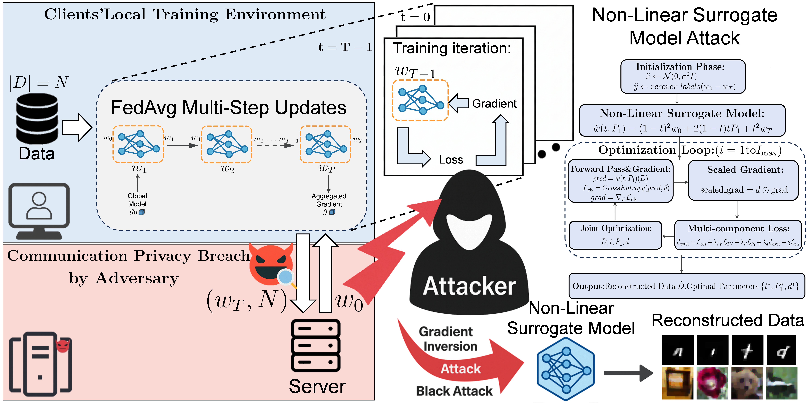
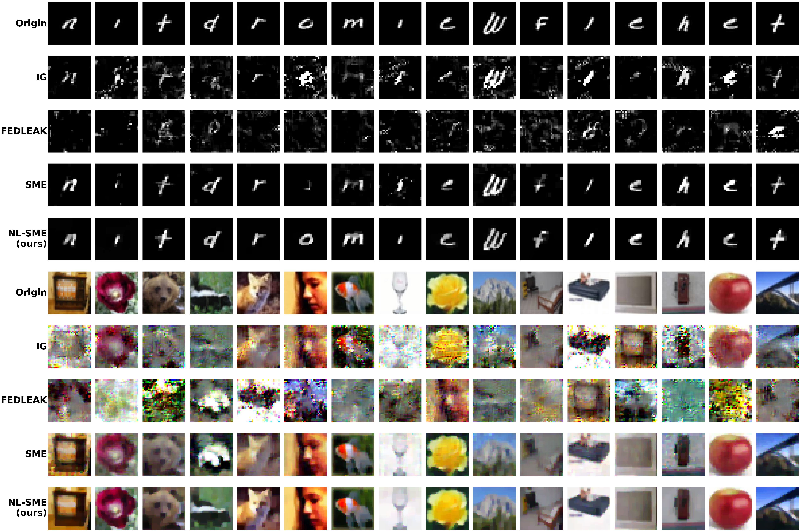
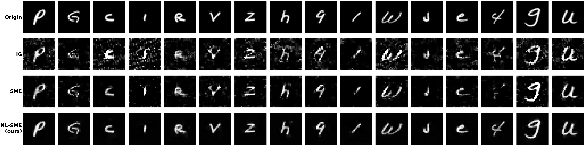
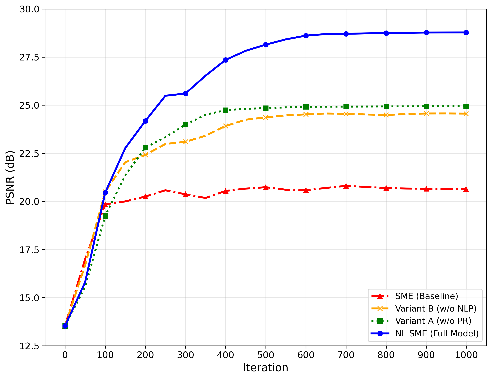
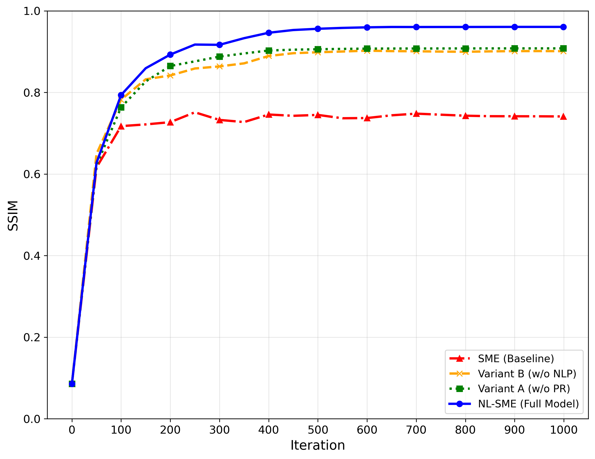
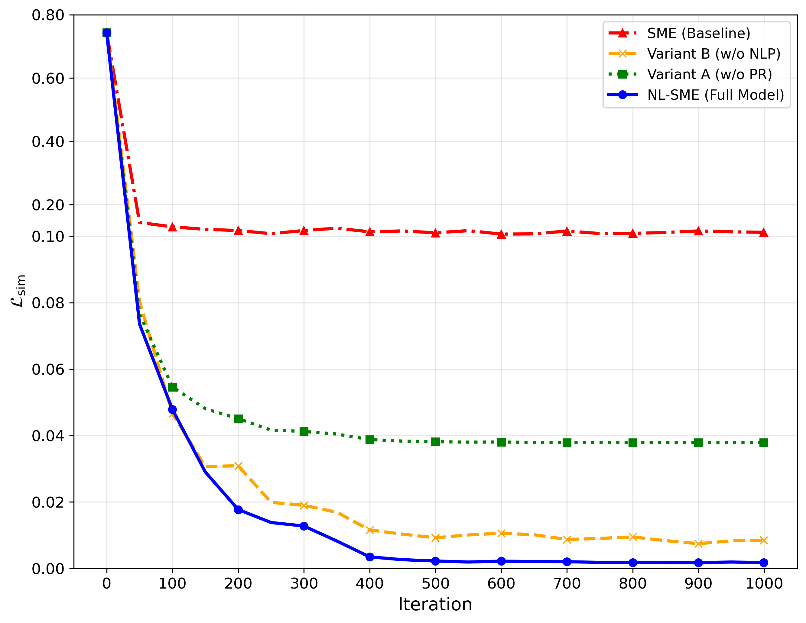

Non-Linear Trajectory Modeling for Multi-Step Gradient Inversion Attacks in Federated Learning
Li Xia, Jing Yu, Member, IEEE, Zheng Liu, Sili Huang, Wei Tang, and Xuan Liu, Member, IEEE
*L. Xia, J. Yu, Z. Liu, S. Huang, W. Tang, and X. Liu are with the Key Laboratory of Ethnic Language Intelligent Analysis and Security Governance of MOE, Minzu University of China, Beijing 100081, China (e-mail: xiali@muc.edu.cn; jing.yu@muc.edu.cn; liuzheng@muc.edu.cn; huangsili@muc.edu.cn; tangocean@bupt.cn; liuxuan@muc.edu.cn).†Corresponding authors: Xuan Liu (e-mail: liuxuan@muc.edu.cn) and Jing Yu (e-mail: jing.yu@muc.edu.cn).
Abstract Federated Learning (FL) enables collaborative training while preserving privacy, yet Gradient Inversion Attacks (GIAs) pose severe threats by reconstructing private data from shared gradients. In realistic FedAvg scenarios with multi-step updates, existing surrogate methods like SME rely on linear interpolation to approximate client trajectories for privacy leakage. However, we demonstrate that linear assumptions fundamentally underestimate SGD’s nonlinear complexity, encountering irreducible approximation barriers in non-convex landscapes with only one-dimensional expressiveness. We propose Non-Linear Surrogate Model Extension (NL-SME), the first framework introducing learnable quadratic Bézier curves for trajectory modeling in GIAs against FL. NL-SME leverages \(|w|+1\)-dimensional control point parameterization combined with dvec scaling and regularization mechanisms to achieve superior approximation accuracy. Extensive experiments on CIFAR-100 and FEMNIST demonstrate NL-SME significantly outperforms baselines across all metrics, achieving 94%–98% performance gaps and order-of-magnitude improvements in cosine similarity loss while maintaining computational efficiency. This work exposes critical privacy vulnerabilities in FL’s multi-step paradigm and provides insights for robust defense development.Code is available at https://anonymous.4open.science/r/NL-SME-main/README.md.
Index Terms Federated Learning, Gradient Inversion Attack, Non-Linear Trajectory Modeling, Privacy Attack, Bézier Curves
FEDERATED Learning (FL) enables collaborative model training without sharing raw data, offering unprecedented privacy protection for cross-organizational collaboration [1, 2, 3]. This “data stays local, models collaborate” paradigm shows significant potential in privacy-sensitive domains like healthcare [4], finance [5], and industrial IoT systems [6, 7], becoming a critical pathway for data sovereignty protection.
However, privacy protection is not absolute. Recent research reveals that attackers can infer or reconstruct clients’ private training data by analyzing gradient information transmitted during FL [8, 9, 10]. These Gradient Inversion Attacks (GIAs) have evolved from theoretical possibilities to practical threats [11, 12], severely undermining FL’s privacy foundation.
Early methods like Deep Leakage from Gradients (DLG) [8] and Inverting Gradients (IG) [9] demonstrated data reconstruction feasibility from single-step gradients, but their effectiveness drops dramatically with FedAvg’s multi-step local updates. To reduce communication costs, real-world FL deployments require clients to perform multiple local SGD rounds before uploading aggregated gradients [1, 13], posing a fundamental challenge: how to reconstruct training data from aggregated gradients representing multi-step cumulative effects?
Surrogate model methods address this challenge. Notably, Surrogate Model Extension (SME) [14] proposed the landmark linear interpolation assumption, approximating client parameter trajectories through linear combinations of initial and final parameters. However, our key insight is that SGD optimization trajectories, determined by non-convex loss functions and stochastic gradients, typically exhibit significant nonlinear characteristics [15, 16, 17]. This nonlinearity is particularly pronounced in federated settings with multi-step local updates as in FedAvg [1], where privacy-preserving mechanisms like differential privacy [18] and secure aggregation [19] further distort the gradient landscape. Linear interpolation, as an oversimplified approximation, often traverses high-loss regions and deviates from actual optimization paths, fundamentally limiting surrogate model representational capacity.
Critically, this nonlinearity challenge is amplified in production FL deployments where operational constraints necessitate aggressive communication reduction strategies. In privacy-critical domains such as healthcare [4], financial risk management [5], and large-scale IoT systems [6], clients are routinely configured to execute hundreds of local SGD steps (\(T \gg 1\)) to amortize communication overhead and accelerate convergence [1, 13]. This multi-step paradigm (\(T > 1\)) constitutes the defining characteristic of FedAvg, which, when combined with severe Non-IID data heterogeneity across distributed clients [3, 2], fundamentally intensifies trajectory nonlinearity. In realistic scenarios where clients train on aggregated data from multiple heterogeneous sources [20, 21], this heterogeneity becomes even more pronounced, creating substantially more irregular optimization landscapes.
Moreover, to counter escalating privacy threats, production FedAvg deployments increasingly integrate defensive mechanisms such as differential privacy [18] and secure aggregation [19].These privacy mechanisms are not designed to prevent gradient inversion attacks, but by injecting noise into gradients or distorting parameter update processes [22], they further amplify the intrinsic nonlinearity of SGD trajectories, causing exponential divergence between actual optimization paths and linear interpolation assumptions. Therefore, it is imperative to introduce a trajectory modeling method with high-dimensional expressiveness and curvature adaptivity to accurately capture the cumulative effects of multi-step SGD, enabling precise evaluation and attack of FL privacy vulnerabilities in real-world scenarios.
Linear interpolation faces fundamental geometric limitations. It possesses only a one-dimensional parameter space, while actual SGD trajectories unfold in a high-dimensional parameter space with complex curvature patterns. Our theoretical analysis reveals that linear approximation incurs an irreducible error bound proportional to trajectory curvature, creating an fundamental convergence barrier. As local update steps increase, this performance gap grows super-linearly.
To address this limitation, we turn to nonlinear parametric curves. Garipov et al. [15] demonstrated that quadratic curves can effectively capture key geometric features in non-convex loss functions while maintaining computational efficiency. Among parametric curve families, we select quadratic Bézier curves for three key reasons. First, their Bernstein polynomial foundation ensures numerical stability. Second, they require only one learnable control point beyond fixed endpoints, balancing expressiveness and tractability. Third, they strictly generalize linear interpolation, making our approach a natural extension of SME.
Based on this insight, we propose Non-Linear Surrogate Model Extension (NL-SME), systematically introducing nonlinear parametric trajectory modeling for GIAs. NL-SME replaces linear interpolation with learnable quadratic Bézier curves, capturing SGD’s curved characteristics through learnable control points, and constructing more expressive surrogate models by combining control point regularization and dvec parameter scaling mechanisms.Figure 1 presents the threat model and workflow of our proposed NL-SME.
The main contributions of this paper are summarized as follows:

Fig. 1: Threat model and attack pipeline of NL-SME. A client performs \(T\) local iterations on dataset \(D\) (size \(N\)) from \(w_0\) to \(w_T\), then sends weights to server. An adversary launches NL-SME by jointly optimizing dummy data \(\tilde {D}\) and Bézier curve parameters (\(P_1\), \(t\)) to reconstruct the original training data.FL faces severe privacy challenges despite its distributed learning promises [23, 24, 25]. Recent comprehensive studies [26, 27] highlight the persistent vulnerability to gradient-based attacks, even under defensive mechanisms like differential privacy and secure aggregation [19, 22]. GIAs reveal the possibility of inferring clients’ private training data through transmitted gradient analysis, becoming a critical security threat constraining FL adoption [28, 29].
DLG [8] pioneered private data reconstruction from shared gradients, establishing a gradient matching optimization framework. IG [9] achieved scalable deep network attacks via cosine similarity loss and total variation regularization. iDLG [30] improved attack stability through analytical label recovery. These foundational works established theoretical bases for GIAs, but primarily targeted idealized FedSGD single-step scenarios [31, 12].
In real FL environments, the widely adopted FedAvg algorithm requires clients to perform multiple local updates to improve communication efficiency, posing fundamental challenges for GIAs. To address this challenge, research has evolved different solution approaches. Full simulation methods like DLFA [32] attempt to reproduce every local update step precisely, but computational complexity grows exponentially with update steps. Conversely, surrogate model methods capture multi-step update effects through approximate models, significantly reducing computational overhead while maintaining effectiveness. SME [14] proposed the landmark linear interpolation assumption, approximating client parameter trajectories through linear combinations of initial and final parameters, achieving 100Õ computational acceleration.
Recent research focuses on new GIAs forms and defense strategies [33, 34]. Methods like FEDLEAK [35] achieve higher-quality data reconstruction in FL environments by improving gradient matching strategies, highlighting existing defense inadequacies.These latest research achievements provide important theoretical foundations and empirical references for this work.
Despite progress in surrogate methods, commonly adopted linear trajectory modeling has fundamental limitations. From optimization theory, SGD trajectories in neural network training typically exhibit significant nonlinear characteristics under non-convex loss functions and stochastic gradients, while linear interpolation often traverses high-loss regions, deviating from actual paths. Parametric curves and spline theory have been widely applied in machine learning (ML) optimization trajectory modeling [36, 37], demonstrating nonlinear modeling advantages in characterizing complex optimization trajectories, yet remain underutilized in GIAs.
Traditional linear assumptions indicate urgent need for more accurate nonlinear modeling to capture SGD optimization’s true dynamics. NL-SME systematically introduces nonlinear parametric trajectory modeling into GIAs, precisely characterizing parameter evolution’s curved features through quadratic Bézier curves, fundamentally breaking linear assumption limitations and providing more powerful analytical tools for FL security assessment.
| Symbols | Description |
| \(w_0\), \(w_T\) | Initial and final model parameters in FL. |
| \(\hat {w}(t, P_1)\) | Nonlinear surrogate model with Bézier parameters. |
| \(D\), \(\tilde {D}\) | Original dataset and dummy dataset for reconstruction. |
| \((x_i, y_i)\) | Training sample and label pair. |
| \(N\), \(B\), \(T\) | Dataset size, batch size, and total local training steps. |
| \(\mathcal {L}_{\cos }\) | Cosine similarity loss between real and dummy gradients. |
| \(\mathcal {L}_{TV}\) | Total variation regularization for image smoothness. |
| \(\mathcal {L}_{P_1}\) | Control point regularization, \(\|P_1 - \frac {w_0 + w_T}{2}\|^2\). |
| \(\mathcal {L}_d\) | Parameter scaling regularization, \(\sum _{i=1}^{|w|} (d_i - 1)^2\). |
| \(\nabla _w \ell \) | Gradient of loss with respect to model parameters. |
| \(t\) | Bézier curve parameter controlling trajectory position. |
| \(P_1\) | Learnable control point for quadratic Bézier curve. |
| \(d\) | Vector of parameter-wise scaling factors, \(d_i \in [0.1, 10.0]\). |
| \(\eta \), \(\eta _t\) | Learning rates for dummy data and Bézier parameter \(t\). |
| \(\eta _{P_1}\), \(\eta _d\) | Learning rates for control point and scaling factors. |
| \(\lambda _{TV}\) | Regularization coefficient for total variation term. |
| \(\lambda _P\), \(\lambda _d\) | Regularization coefficients for \(P_1\) and \(d\) terms. |
| \(\gamma \) | Weight coefficient for classification loss. |
| \(\odot \) | Hadamard product (element-wise multiplication). |
| \(\langle \cdot , \cdot \rangle \) | Inner product of two vectors. |
| \(O(\cdot )\) | Big-O notation for computational complexity. |
A. Federated Learning and Threat Model
Federated Learning (FL) enables collaborative model training across \(K\) distributed clients without centralizing raw data. In the FedAvg protocol [1], at communication round \(r\), each client \(k \in [K]\) receives global model \(w^{(r)}\) and performs \(T\) local SGD steps on private dataset \(D_k = \{(x_i^k, y_i^k)\}_{i=1}^{n_k}\) via the update rule \(w_{t+1}^k = w_t^k - \eta \nabla _w \ell (w_t^k; B_t^k)\) for \(t = 0, 1, \ldots , T-1\), where \(\eta \) is the learning rate, \(\ell (\cdot )\) is the loss function, and \(B_t^k \subseteq D_k\) is a mini-batch of size \(B\). Starting from \(w_0^k = w^{(r)}\), after \(T\) steps, client \(k\) computes the parameter difference \(\Delta w^k = w_T^k - w_0^k\) and uploads \(\Delta w^k\) to the server. The server aggregates updates via \(w^{(r+1)} = w^{(r)} + \frac {1}{K} \sum _{k=1}^{K} \Delta w^k\). The multi-step regime (\(T \geq 2\)) reduces communication costs [1, 13] but creates challenges for gradient inversion attacks, as \(\Delta w^k\) represents aggregated effects of \(T\) sequential updates rather than a single gradient.
We consider an honest-but-curious adversary \(\mathcal {A}\) that compromises the parameter server. Specifically, \(\mathcal {A}\) follows the FL protocol but attempts to learn private information about each client’s training data \(D_k\) from exchanged parameter updates. The adversary has access to \(\mathcal {I}_{\mathcal {A}} = \{f_\theta (\cdot ), w^{(r)}, \Delta w^k, \eta , T, B\}\), where \(f_\theta (\cdot )\) denotes the neural network architecture, \(w^{(r)}\) is the initial global model, \(\Delta w^k\) is the observed parameter difference, and \(\{\eta , T, B\}\) represent training hyperparameters (learning rate, local steps, batch size). We assume that \(\mathcal {A}\) has some auxiliary information necessary for inference attacks [8, 9, 14], such as general knowledge of the data domain (e.g., natural images), which can be easily obtained in practice.
The adversary cannot access intermediate parameters \(\{w_1^k, \ldots , w_{T-1}^k\}\) during local training, as only the aggregated update \(\Delta w^k\) is communicated. Additionally, individual mini-batch gradients \(\{\nabla _w \ell (w_t^k; B_t^k)\}_{t=0}^{T-1}\) remain unobservable to the adversary. Furthermore, we exclude active attacks such as manipulating the FL protocol or colluding with other clients, since such behaviors can be detected by existing Byzantine-robust mechanisms [10, 19].
Given observed \(\Delta w^k\), the adversary aims to reconstruct the private training data by optimizing dummy data \(\tilde {D} = \{(\tilde {x}_i, \tilde {y}_i)\}_{i=1}^B\) and surrogate model parameters \(\theta \) to minimize the reconstruction loss:
where \(\hat {w}(\theta )\) is a surrogate model approximating the client’s training trajectory, and \(\mathcal {L}_{\text {sim}}\) typically employs cosine similarity for scale-invariant gradient matching. Our method NL-SME focuses on redesigning the surrogate model \(\hat {w}(\theta )\) with nonlinear parametric curves to achieve more accurate gradient matching via \(\mathcal {L}_{\text {sim}}\) in multi-step scenarios.
Early gradient inversion attacks [8, 9] target single-step scenarios (\(T=1\)) where \(\Delta w = -\eta \nabla _w \ell (w_0; B)\). Deep Leakage from Gradients (DLG) [8] optimizes dummy data to minimize gradient distance:
Inverting Gradients (IG) [9] improves reconstruction via cosine similarity and total variation regularization:
where \(\mathcal {L}_{TV}(\tilde {D})\) promotes spatial smoothness. However, these methods fail for \(T \geq 2\) because \(\Delta w = \sum _{t=0}^{T-1} (w_{t+1} - w_t)\) aggregates multiple gradient steps, breaking the direct gradient-data correspondence.
To address multi-step challenges, SME [14] constructs an intermediate model \(\hat {w}(\alpha )\) via linear interpolation:
such that gradients at \(\hat {w}(\alpha )\) align with the parameter difference direction:
SME jointly optimizes dummy data \(\tilde {D}\) and interpolation parameter \(\alpha \). Compared to simulation methods [32], SME achieves \(O(|w| \cdot B)\) time complexity independent of \(T\), with memory complexity \(O(|w|)\). The method minimizes the cosine distance between the overall parameter update \(\Delta w = w_T - w_0\) and the gradient at the interpolated point. However, linear interpolation introduces fundamental expressiveness limitations analyzed next.
C. Limitations of Linear Trajectory Assumptions
Despite SME’s effectiveness, its linear interpolation assumption has fundamental limitations that motivate our non-linear approach.
Linear interpolation defines a one-dimensional subspace \(\mathcal {M}_{\text {linear}} = \{(1-\alpha )w_0 + \alpha w_T : \alpha \in [0,1]\} \subset \mathbb {R}^{|w|}\), providing only single-parameter expressiveness. In contrast, actual SGD trajectories \(\{w_0, w_1, \ldots , w_T\}\) unfold in \(|w|\)-dimensional space with complex nonlinear characteristics [15, 16].
From optimization theory, linear paths in non-convex landscapes typically traverse high-loss regions. Consider the Taylor expansion:
For non-convex neural network loss functions, the Hessian \(\mathbf {H}\) has mixed eigenvalues, causing linear paths to deviate from gradient-guided trajectories. The projection error from actual trajectory points to the linear subspace grows as:
This geometric mismatch directly degrades gradient alignment quality in Eq. (5).
Under Lipschitz gradient continuity (\(\|\nabla \ell (w_1) - \nabla \ell (w_2)\| \leq L \|w_1 - w_2\|\)), linear surrogate models exhibit irreducible gradient direction bias:
where \(\epsilon _{\text {bias}} > 0\) depends on trajectory curvature and loss landscape non-convexity. This bias creates a fundamental performance ceiling that cannot be overcome through better optimization alone.
These limitations reveal that linear trajectory assumptions introduce irreducible approximation errors. The geometric mismatch causes linear paths to traverse high-loss regions that SGD naturally avoids, while the expressiveness bottleneck arises because one-dimensional parameterization cannot capture the \(|w|\)-dimensional complexity of the optimization landscape. Moreover, \(\epsilon _{\text {bias}}\) fundamentally limits achievable accuracy, creating a convergence ceiling that constrains reconstruction quality. As the number of steps \(T\) increases, performance degradation worsens super-linearly, demonstrating the scaling limitations of linear approximations in multi-step scenarios.
These fundamental constraints motivate our central contribution: non-linear trajectory modeling via parametric curves with learnable control points. Section IV-D establishes theoretical foundations .
To overcome traditional linear assumption limitations, we propose NL-SME. Table I summarizes the key notations. We formulate the general objective with nonlinear surrogate model \(\hat {w}(t, P_1)\) parameterized by quadratic Bézier curves:
where \(t \in [0,1]\) is the curve parameter and \(P_1 \in \mathbb {R}^{|w|}\) is the learnable control point. This formulation provides \((|w|+1)\)-dimensional parameter space compared to SME’s one-dimensional linear interpolation, enabling more expressive nonlinear trajectory modeling.
We first analyze linear assumption deficiencies, then propose parametric curve surrogate models, construct optimization frameworks, and provide algorithmic implementation with theoretical analysis.
A. Parametric Curve Surrogate Models
To address the inability of linear interpolation to accurately capture actual SGD trajectories, we adopt parametric curves for nonlinear modeling. The choice of quadratic Bézier curves is motivated by both theoretical foundations and practical considerations. Garipov et al. [15] demonstrated that quadratic curves can effectively capture key geometric features in non-convex loss functions while maintaining computational efficiency, providing a strong theoretical foundation for modeling complex trajectories in neural network parameter spaces.
Bézier curves, as parametric polynomial curves, offer several advantages validated by extensive research. Their Bernstein polynomial mathematical foundation ensures numerical stability and differentiability [38], a critical property for gradient-based optimization. Moreover, control point optimization possesses favorable mathematical properties that enable smooth trajectory generation through quadratic optimization [39]. Importantly, Bézier curves can characterize complex trajectories with few parameters [40, 41], which is crucial for designing parameter-efficient surrogate models that scale to high-dimensional parameter spaces.
Based on these advantages, we select quadratic Bézier curves as the mathematical representation for surrogate trajectories. Given initial parameters \(w_0\) and target parameters \(w_T\), the nonlinear surrogate model is defined as:
where \(t\) is the curve parameter controlling position along the trajectory and \(P_1 \in \mathbb {R}^{|w|}\) is a learnable control point that governs trajectory curvature. This model in Eq. (10) possesses three key properties that make it ideal for our purpose. First, the curve strictly passes through the start and end points by construction: \(\hat {w}(0, P_1) = w_0\) and \(\hat {w}(1, P_1) = w_T\), ensuring exact boundary conditions. Second, the control point \(P_1\) determines both the degree and direction of trajectory curvature, providing \(|w|\) degrees of freedom for trajectory shaping. Finally, when \(P_1 = \frac {w_0 + w_T}{2}\), the quadratic Bézier curve reduces to linear interpolation \(\hat {w}(t, P_1) = (1-t)w_0 + tw_T\), making our model a strict extension of traditional SME that can recover the linear baseline as a special case.
B. NL-SME Optimization Framework
After establishing the nonlinear surrogate model in Eq. (10), we design a comprehensive optimization framework to effectively learn both dummy data and trajectory parameters. Unlike traditional SME which only optimizes a single interpolation parameter \(\alpha \), NL-SME faces the challenge of complex multi-variable joint optimization, requiring simultaneous learning of reconstruction data \(\tilde {D} = \{\tilde {x}, \tilde {y}\}\), curve parameter \(t \in [0,1]\), control point \(P_1 \in \mathbb {R}^{|w|}\), and scaling factors \(d \in \mathbb {R}^{|w|}\). To ensure both reconstruction accuracy and optimization stability, we construct a comprehensive loss function that balances multiple objectives.
Based on the nonlinear surrogate trajectory, we construct the optimization objective:
This loss function in Eq. (11) comprises four key components, each serving a specific role in the optimization process. Notably, in practical applications, a classification consistency loss term \(\mathcal {L}_{cls}(\tilde {D}, t, P_1) = \text {CrossEntropy}(\hat {w}(t, P_1)(\tilde {x}), \tilde {y})\) can be selectively added to further improve the semantic accuracy of reconstructed data, where \(\hat {w}(t, P_1)(\tilde {x})\) denotes the model predictions on reconstructed inputs.
The first component is the cosine similarity loss, which forms the core of gradient inversion attacks by ensuring consistency between reconstructed gradients and the true parameter update direction:
where \(\tilde {\nabla }_{\hat {w}} \ell (\hat {w}(t, P_1), \tilde {D})\) denotes the gradient computed on the reconstructed data \(\tilde {D}\) at the surrogate model parameters \(\hat {w}(t, P_1)\) from Eq. (10). This loss in Eq. (12) measures the angular distance between the observed parameter update \((w_0 - w_T)\) and the gradient direction that would be produced by the reconstructed data, effectively enforcing that the dummy data generates gradient signals matching the victim’s update.
The second component is total variation regularization, which improves reconstruction quality by promoting local smoothness in the image domain:
This regularization in Eq. (13) penalizes high-frequency noise and artifacts, encouraging reconstructed images to exhibit natural spatial coherence.
The third component is control point regularization, which prevents control points from deviating into unreasonable regions of parameter space:
By anchoring \(P_1\) near the midpoint between \(w_0\) and \(w_T\) in Eq. (14), this regularization ensures that the trajectory remains within a plausible region while still permitting sufficient flexibility to capture nonlinear curvature. The regularization strength \(\lambda _P\) controls the trade-off between trajectory expressiveness and numerical stability.
Finally, to further improve attack accuracy, we extend the dvec scaling mechanism to account for heterogeneous parameter importance. The core insight is that different model parameters may contribute differently to gradient matching, necessitating parameter-specific scaling factors \(d_i \in [0.1, 10.0]\) to adjust the relative importance of parameter gradients:
where \(d_i\) is the scaling factor for the \(i\)-th parameter. This scaled gradient in Eq. (15) replaces the standard gradient in the cosine loss of Eq. (12), enabling adaptive weighting of different parameter groups. To prevent scaling factors from deviating excessively from unit values, we introduce parameter scaling regularization:
which anchors the scaling factors near unity in Eq. (16) while permitting necessary adjustments for gradient matching.
During optimization, we compute gradients for each variable through the chain rule to enable simultaneous updates. The gradient of curve parameter \(t\) with respect to the total loss is computed as:
where the partial derivative of the Bézier curve from Eq. (10) with respect to \(t\) is:
This derivative in Eq. (18) reflects the velocity along the quadratic Bézier trajectory, enabling gradient descent to find the optimal position parameter \(t^*\) that best matches the gradient observations.
Similarly, the gradient of control point \(P_1\) contains two contributing components. For each dimension \(i\) of the control point, we have:
where the first term arises from the cosine loss in Eq. (12) through the chain rule, and the second term comes directly from the control point regularization in Eq. (14). The respective partial derivatives are:
The partial derivative in Eq. (20) captures how the control point influences the trajectory position, while Eq. (21) provides the regularization gradient that anchors \(P_1\) near the midpoint. Through this multi-variable joint optimization using gradients from Eqs. (17) and (19), NL-SME can simultaneously learn optimal data reconstruction and trajectory parameters, achieving superior gradient matching compared to single-parameter linear methods.
We now present the complete algorithmic realization of NL-SME. The central challenge is jointly optimizing heterogeneous variables (\(\tilde {D}\), \(t\), \(P_1\), \(d\)) that exhibit different scales and convergence rates, which we address via hierarchical learning rate design.
Based on the quadratic Bézier curve surrogate model, we design a multi-variable joint optimization algorithm. The algorithm adopts conservative initialization strategies: control point \(P_1^{(0)} = \frac {w_0 + w_T}{2}\), curve parameter \(t^{(0)} = 0.5\), scaling factor \(d^{(0)} = \mathbf {1}\). To coordinate optimization progress of different variables, we employ hierarchical learning rate design satisfying \(\eta > \eta _t > \eta _{P_1}\). Each algorithm iteration includes five core steps: computing nonlinear surrogate model parameters, forward propagation and gradient computation, multi-term loss aggregation, gradient updates, and constraint projection.Algorithm 1 presents the optimization steps of our approach.
NL-SME’s time complexity is \(O(|w| \cdot B)\), maintaining the same level as traditional SME. Gradient computations for control point \(P_1\) and scaling factor \(d\) introduce \(O(|w|)\) additional overhead, which is negligible compared to the main computational burden of forward-backward propagation. Memory complexity is \(O(|w|)\), independent of the number of local update steps. Under appropriate regularization parameter settings, control point regularization terms ensure bounded Hessian matrix condition numbers, guaranteeing local convergence of the algorithm.
Compared to traditional linear interpolation models’ one-dimensional parameter space, quadratic Bézier curves possess \(|w| + 1\)-dimensional parameter space, providing richer geometric representational capacity. As shown in Section IV-A, any linear interpolation can be viewed as a special case of quadratic Bézier curves (when \(P_1 = \frac {w_0 + w_T}{2}\)), but the converse is not true. Therefore, quadratic Bézier models theoretically possess strictly stronger expressiveness, enabling more precise characterization of nonlinear trajectory features during SGD optimization processes. When the number of local update steps increases, actual SGD trajectories exhibit more significant nonlinear characteristics, further amplifying NL-SME’s advantages over linear methods.
We provide theoretical justification for the superiority of nonlinear trajectory modeling over linear approximations. This analysis establishes fundamental error bounds for linear interpolation, constant-factor improvements via quadratic Bézier curves, convergence barriers that linear methods cannot overcome, and how these behaviors interact with the number of local steps in multi-step scenarios.
Consider the actual SGD trajectory \(\gamma _{\text {SGD}} : [0, 1] \to \mathbb {R}^{|w|}\) connecting \(w_0\) to \(w_T\) over \(T\) local steps. Let \(\gamma _{\text {linear}}(t) = (1-t)w_0 + tw_T\) denote the linear interpolation employed by SME. We first establish a basic limitation of linear interpolation in the presence of nonzero curvature.
Lemma 1 (Linear Approximation Limitation). Under Lipschitz continuous gradients (constant \(L\)) and a nondegenerate curvature condition , the \(L_2\) approximation error satisfies:
where \(\kappa >0\) is the minimal projected curvature along a fixed unit direction.
Proof Sketch. We work with a time reparameterization for which \(\gamma _{\text {SGD}}(0)=\gamma _{\text {linear}}(0)=w_0\) and \(\dot {\gamma }_{\text {SGD}}(0)=\dot {\gamma }_{\text {linear}}(0)\). Denote the deviation by \(\Delta (t) := \gamma _{\text {SGD}}(t)-\gamma _{\text {linear}}(t)\). Then \(\Delta (0)=\Delta '(0)=0\) and \(\Delta ''(t)=\ddot {\gamma }_{\text {SGD}}(t)\) because \(\ddot {\gamma }_{\text {linear}}(t)\equiv 0\). By the projected curvature assumption (Definition ??), there exists a unit vector \(v\) such that \(\langle \ddot {\gamma }_{\text {SGD}}(t), v\rangle \ge \kappa \) for all \(t\in [0,1]\). Let \(\phi (t):=\langle \Delta (t), v\rangle \). Then \(\phi (0)=\phi '(0)=0\) and \(\phi ''(t)\ge \kappa \). Integrating twice yields \(\phi (t)\ge \kappa t^2/2\), so \(\|\gamma _{\text {SGD}}(t)-\gamma _{\text {linear}}(t)\|\ge \kappa t^2/2\). Squaring and integrating over \([0,1]\) gives \(\int _0^1 \|\Delta (t)\|^2 dt \ge \kappa ^2/20 > \kappa ^2/48\). Since this bound holds pathwise, it also holds after taking expectations with respect to the stochasticity in SGD. Full proof in Supplemental Material ??. □
Lemma 1 shows that as soon as the trajectory exhibits nontrivial curvature along some fixed direction, linear interpolation incurs an irreducible approximation error proportional to \(\kappa ^2\). This motivates nonlinear modeling.
We now demonstrate that quadratic Bézier curves achieve strictly smaller worst-case approximation error by introducing learnable control points.
Theorem 2 (Bézier Approximation Superiority). For the quadratic Bézier curve \(\hat {w}(t, P_1) = (1-t)^2w_0 + 2(1-t)tP_1 + t^2w_T\) with optimally chosen \(P_1^*\), the approximation error satisfies:
where \(C\) is a universal constant and \(\kappa _{\infty } := \|\ddot {\gamma }_{\text {SGD}}\|_{\infty }\) denotes the uniform curvature bound. The optimal control point \(P_1^*\) is uniquely determined by the \(L_2\) projection normal equations for quadratic Bézier curves with fixed endpoints \(w_0,w_T\) . In particular, the bound holds with \(C = 1/144\).
Proof Sketch. The family of quadratic Bézier curves with fixed endpoints forms an affine subspace of the three-dimensional function space spanned by degree-2 Bernstein polynomials \(\{B_0^2(t), B_1^2(t), B_2^2(t)\}\) where \(B_i^2(t) = \binom {2}{i}t^i(1-t)^{2-i}\). Minimizing the \(L_2\) error is equivalent to orthogonally projecting \(\gamma _{\text {SGD}}\) onto this subspace; the normal equations uniquely determine \(P_1^*\). For trajectories with uniformly bounded curvature \(\|\ddot {\gamma }_{\text {SGD}}\|_{\infty } \leq \kappa _{\infty }\), consider the classical degree-2 Bernstein operator \(B_2(\gamma _{\text {SGD}})(t) = \sum _{k=0}^2 \gamma _{\text {SGD}}(k/2) B_k^2(t)\), which corresponds to the quadratic Bézier curve with control points \(\gamma _{\text {SGD}}(0),\gamma _{\text {SGD}}(1/2),\gamma _{\text {SGD}}(1)\). By the Bernstein polynomial approximation theorem [42] for degree-2 polynomials, we have \(\|\gamma _{\text {SGD}} - B_2(\gamma _{\text {SGD}})\|_\infty \le \kappa _{\infty }/12\). Since \(B_2(\gamma _{\text {SGD}})\) belongs to the Bézier family and \(\hat {w}(\cdot ;P_1^*)\) is \(L_2\)-optimal, we have \(\|\gamma _{\text {SGD}} - \hat {w}(\cdot ;P_1^*)\|_{L^2} \le \|\gamma _{\text {SGD}} - B_2(\gamma _{\text {SGD}})\|_{L^2} \le \|\gamma _{\text {SGD}} - B_2(\gamma _{\text {SGD}})\|_\infty \le \kappa _{\infty }/12\), yielding the stated bound with \(C=1/144\). Full proof in Supplemental Material ??. □
Corollary 3 (Constant-Factor Improvement). Under the assumptions of Lemma 1 and Theorem 2, for typical SGD trajectories where the projected curvature \(\kappa _{\text {proj}}\) and uniform curvature \(\kappa _{\infty }\) are of the same order (i.e., \(\kappa _{\text {proj}} \asymp \kappa _{\infty }\)), the approximation errors of linear interpolation and quadratic Bézier curves satisfy
and therefore
Corollary 3 establishes a strict, curvature-dependent constant-factor improvement (at least threefold in the worst case) of quadratic Bézier modeling over linear interpolation. When combined with the curvature scaling in Assumption ??, both errors decay as \(O(1/T)\) but quadratic Bézier curves provably enjoy a smaller constant and, as we show empirically, significantly better behavior as \(T\) grows due to their increased modeling flexibility.
We now analyze how approximation errors affect gradient inversion convergence. The following result establishes a fundamental barrier for linear methods in a locally quadratic regime.
Theorem 4 (Linear Method Convergence Barrier). For gradient inversion with linear surrogate models, suppose additionally that the midpoint gradient is predominantly aligned with the segment direction \(d := w_T - w_0\). Then in a locally quadratic and smooth regime there exists a convergence barrier:
where \(\delta \) is the trajectory deviation parameter \(\|\gamma _{\text {SGD}}(s) - [(1-s)w_0 + sw_T]\| \geq \delta s^2\|w_T - w_0\|\), \(m_H>0\) is a Hessian separation constant defined in Definition ??, and \(\hat {w}_{\text {linear}} := (w_0 + w_T)/2\) denotes the midpoint of the linear surrogate. The following bound holds provided the midpoint gradient is predominantly aligned with \(d\) . We treat \((\delta , m_H, \|w_0 - w_T\|, \|\nabla \ell (\hat {w}_{\text {linear}}, D)\|)\) as problem-dependent constants independent of the inner-loop iteration index \(k\).
Proof Sketch. We work in a locally quadratic regime where \(\ell \) is twice continuously differentiable. At the midpoint \(\hat {w}_{\text {mid}} = (w_0 + w_T)/2\), Taylor expansion along the linear path gives \(\nabla \ell (\hat {w}_{\text {mid}}, D) = \nabla \ell (w_0, D) + \int _0^{1/2} \nabla ^2\ell (w_0 + s(w_T - w_0), D) \cdot (w_T - w_0) ds + R_{\text {lin}}\). The bias from the actual curved trajectory creates a gradient mismatch \(\Delta _{\text {grad}} = \int _0^{1/2} [\nabla ^2\ell (w_0 + s(w_T - w_0),D) - \nabla ^2\ell (\gamma _{\text {SGD}}(s),D)] \cdot (w_T - w_0) ds + R_{\text {curv}}\). Using the trajectory deviation assumption and directional Hessian separation , we obtain \(\|\Delta _{\text {grad}}\|_2 \ge m_H\delta \|w_T - w_0\|_2^2/24\). Under the directional Hessian separation condition and the alignment assumption, the gradient mismatch induces a nontrivial lower bound on the cosine loss: \(\mathcal {L}_{\text {cos}}(\hat {w}_{\text {linear}}) \ge c (\delta m_H \|d\|_2^2 / \|\nabla \ell (\hat {w}_{\text {linear}}, D)\|_2)^2\) for some constant \(c > 0\). A direct geometric calculation yields the stated barrier. Full proof in Supplemental Material ??. □
Remark. The barrier \(\epsilon _{\text {barrier}}\) is inherent to linear modeling in curved regimes and cannot be overcome through improved algorithms, extended training, or larger datasets. This fundamentally limits SME’s effectiveness once the linear surrogate is misspecified with respect to the true curved trajectory.
In contrast, nonlinear modeling can reduce gradient mismatch as curvature becomes smaller:
Theorem 5 (Nonlinear Method Convergence). Using quadratic Bézier surrogates \(\hat {w}(t, P_1)\) with jointly optimized \(P_1\) and \(\tilde {D}\), under the smoothness and curvature assumptions above and the non-vanishing trajectory gradient condition (Definition ??), there exists a constant \(C'>0\) such that
Assuming the curvature scale satisfies \(\kappa _{\infty } \le c/\sqrt {T}\) (as suggested by the heuristic in Assumption ?? ), this gives
for some constant \(\tilde C>0\), demonstrating that nonlinear surrogate errors can, in principle, be driven to zero as \(T\) increases. Moreover, if the inner optimization procedure used by NL-SME is able to drive the empirical loss arbitrarily close to this infimum, then its iterates satisfy
Proof Sketch. The learnable control point \(P_1 \in \mathbb {R}^{|w|}\) provides \(|w|\) degrees of freedom versus linear interpolation’s single scalar \(\alpha \in [0,1]\). From the Bernstein approximation argument in Supplemental Material ??, we know that there exists a control point \(P_1^*\) such that \(\sup _{t\in [0,1]} \|\gamma _{\text {SGD}}(t) - \hat {w}(t, P_1^*)\| \le C_{\text {traj}}\kappa _{\infty }\). Hence, \(\inf _{P_1} \|\gamma _{\text {SGD}} - \hat {w}(\cdot ; P_1)\|_{L^2} \le \|\gamma _{\text {SGD}} - \hat {w}(\cdot ; P_1^*)\|_{L^2} \le C_{\text {traj}}\kappa _{\infty }\). By Lipschitz smoothness of \(\nabla \ell \), this implies gradient consistency \(\|\nabla \ell (\hat {w}(t;P_1^*), \tilde {D}) - \nabla \ell (\gamma _{\text {SGD}}(t), D)\| = O(\kappa _{\infty })\) for optimally chosen dummy data \(\tilde {D}^*\). At the level of the gradient-matching objective \(\mathcal {L}\) used by NL-SME, this shows that the best achievable objective value scales as \(O(\kappa _{\infty }^2)\). Using the non-vanishing trajectory gradient condition (Definition ??), the angle between gradient vectors can be bounded by \(\theta \le C_g\kappa _{\infty }/g_{\min }\), so for small angles \(\mathcal {L}_{\text {cos}}^* \le \theta ^2/2 \le C'\kappa _{\infty }^2\). Assuming the inner optimization routine approaches this infimum, the iterates satisfy \(\limsup _{k\to \infty } \mathcal {L}_{\text {cos}}^{(k)} \le C' \kappa _{\infty }^2\). Substituting \(\kappa _{\infty } \le c/\sqrt {T}\) yields the stated \(1/T\) scaling (conditional on the curvature scaling assumption). Full proof in Supplemental Material ??. □
The contrast is notable: linear methods face a convergence barrier that does not vanish with more iterations, while nonlinear methods admit errors that can decrease on the order of \(1/T\) under the curvature scaling assumption.
We now discuss the overall performance gap as a function of local update steps. The following result summarizes the provable gap at the level of trajectory approximation.
Theorem 6 (Constant-Factor Performance Gap). Under the assumptions of Lemma 1 and Theorem 2, in \(\mu \)-strongly convex and \(L\)-smooth settings, the distance to the optimum and function value error are equivalent up to constants [43]. Since the MAE in gradient matching is defined as the distance metric, this implies that the mean absolute error (MAE) for SME and NL-SME satisfies
for any fixed \(T\), provided the MAE scales proportionally to the square root of the trajectory approximation error.
Proof Sketch. From Lemma 1 and Theorem 2 we have \(\text {Error}_{\text {SME}} \ge \kappa _{\text {proj}}^2/48\) and \(\text {Error}_{\text {NL-SME}} \le \kappa _{\infty }^2/144\). For typical SGD trajectories where \(\kappa _{\text {proj}} \asymp \kappa _{\infty }\), we obtain \(\text {Error}_{\text {SME}} / \text {Error}_{\text {NL-SME}} \gtrsim 3\). In standard smooth and \(\mu \)-strongly convex settings, the MAE is proportional to the square root of the approximation error [43], giving \(\text {MAE}_{\text {SME}}/\text {MAE}_{\text {NL-SME}} \gtrsim \sqrt {3}\). Therefore, \((\text {MAE}_{\text {SME}} - \text {MAE}_{\text {NL-SME}}) / \text {MAE}_{\text {SME}} = 1 - \text {MAE}_{\text {NL-SME}}/\text {MAE}_{\text {SME}} \gtrsim 1 - 1/\sqrt {3}\). Full proof in Supplemental Material ??. □
|
Dataset |
E |
N |
B | FEDLEAK | IG | SME | NL-SME (ours)
| ||||||||
| \(\mathcal {L}_{\text {sim}}\downarrow \) | PSNR \(\uparrow \) | SSIM \(\uparrow \) | \(\mathcal {L}_{\text {sim}}\downarrow \) | PSNR \(\uparrow \) | SSIM \(\uparrow \) | \(\mathcal {L}_{\text {sim}}\downarrow \) | PSNR \(\uparrow \) | SSIM \(\uparrow \) | \(\mathcal {L}_{\text {sim}}\downarrow \) | PSNR \(\uparrow \) | SSIM \(\uparrow \) | ||||
|
FEMNIST | 20 | 50 | 10 | 0.2414 | 15.60 | 0.673 | 0.1791 | 16.36 | 0.459 | 0.0380 | 21.42 | 0.711 | 0.0009 | 22.61 | 0.788 |
| 50 | 50 | 10 | 0.3130 | 13.95 | 0.604 | 0.3159 | 13.61 | 0.367 | 0.0441 | 20.25 | 0.701 | 0.0020 | 20.83 | 0.741 | |
| 20 | 50 | 20 | 0.1919 | 16.52 | 0.713 | 0.1225 | 17.71 | 0.523 | 0.0387 | 21.49 | 0.718 | 0.0010 | 22.73 | 0.809 | |
| 50 | 50 | 20 | 0.2762 | 14.66 | 0.629 | 0.2449 | 14.48 | 0.369 | 0.0383 | 20.63 | 0.697 | 0.0009 | 21.59 | 0.755 | |
|
CIFAR-100 | 20 | 50 | 10 | 0.1409 | 14.27 | 0.474 | 0.1432 | 14.82 | 0.509 | 0.0544 | 21.29 | 0.783 | 0.0029 | 26.42 | 0.878 |
| 50 | 50 | 10 | 0.2641 | 11.99 | 0.348 | 0.2713 | 12.21 | 0.342 | 0.0633 | 18.75 | 0.712 | 0.0075 | 21.09 | 0.802 | |
| 20 | 50 | 20 | 0.0951 | 16.42 | 0.581 | 0.1022 | 17.05 | 0.639 | 0.0470 | 22.34 | 0.797 | 0.0035 | 25.79 | 0.920 | |
| 50 | 50 | 20 | 0.1863 | 12.88 | 0.395 | 0.1940 | 13.14 | 0.396 | 0.0476 | 20.72 | 0.798 | 0.0030 | 24.94 | 0.908 | |

Fig. 2: Reconstructed images from different federated learning attack methods on FEMNIST and CIFAR-100 datasets. The results are drawn from the experimental setting (\(E=20\), \(N=50\), \(B=10\)). Local steps \(T = E[N/B]\).Our theoretical analysis establishes three key results. First, Lemma 1 and Theorem 4 show that linear interpolation suffers from an irreducible approximation error \(\Theta (\kappa ^2)\) in the presence of non-degenerate curvature and faces a convergence barrier \(\epsilon _{\text {barrier}} = \Theta (1)\) that persists for fixed trajectory parameters regardless of optimization refinements. Second, Theorem 2, Corollary 3, and Theorem 5 demonstrate that quadratic Bézier curves achieve strictly smaller worst-case approximation errors with \(O(\kappa ^2)\) scaling that translates to \(O(1/T)\) under the curvature scaling assumption. Third, Theorem 6 guarantees a constant-factor improvement in MAE, and our experiments reveal that the practical performance advantage grows rapidly with \(T\), reaching \(94\%\)–\(98\%\) relative improvement at \(T=100\), confirming that NL-SME’s superiority stems from fundamental geometric properties of nonlinear trajectory modeling in non-convex optimization landscapes.
We conduct comprehensive experiments to validate NL-SME’s effectiveness and performance improvements. Our evaluation compares NL-SME against three representative baseline methods: Inverting Gradients (IG, NeurIPS ’20) [9], employing pixel-level reconstruction with angle-based loss function; Surrogate Model Extension (SME, ICML ’23) [14], utilizing linear trajectory interpolation for multi-step gradient matching; and FEDLEAK (USENIX Security ’25) [35], which introduces partial gradient matching and gradient regularization techniques to achieve high-fidelity data reconstruction.
We evaluate on two standard image classification benchmarks: FEMNIST [44] from the LEAF FL benchmark, containing 28Õ28 grayscale images across 62 handwritten character classes, and CIFAR-100 [45] with 32Õ32 RGB images across 100 natural categories. We systematically analyze the impact of training epochs \(E\), batch sizes \(B\), and local data sizes \(N\). Our evaluation focuses primarily on realistic small-scale client scenarios (\(N \leq 50\)) while validating scalability on larger datasets. To comprehensively assess NL-SME’s generalizability across diverse neural architectures, we conduct experiments on four representative models: CNNmnist [32], a convolutional architecture with two convolutional layers followed by two fully-connected layers; MLP [14] with two hidden layers of 1000 units each; ResNet8 [46], a compact residual network with skip connections; and ViT [47], employing multi-head self-attention mechanisms. The primary experimental results on FEMNIST utilize CNNmnist, while CIFAR-100 experiments employ CNNcifar [32]. Comprehensive architectural analysis is presented in Supplemental Material ??.
The attacker requires knowledge of the victim’s model weights \(w_0\), \(w_T\), and local data size \(N\). We note that in Federated Learning (FL), clients need to transmit \(N\) to the server for weighted aggregation, making this information available to any message interceptor or honest-but-curious server. To ensure fairness, we provide all methods with the same required information.
We utilize three metrics to measure the quality of reconstructed images: (1) Similarity Loss (\(\mathcal {L}_{\text {sim}}\)) \(\downarrow \) to measure gradient matching accuracy between reconstructed and true gradients; (2) Peak Signal-to-Noise Ratio (PSNR) \(\uparrow \) to quantify reconstruction fidelity; (3) Structural Similarity Index Measure (SSIM) \(\uparrow \) to assess perceptual quality. Note that “\(\downarrow \)” indicates that the lower the metric, the better the attack performance while “\(\uparrow \)” indicates that the higher the metric, the better the attack performance. When PSNR \(<\) 18, reconstruction results become visually corrupted. All experiments are conducted on NVIDIA RTX 5090 GPU, and we record GPU memory consumption (GB) and computation time (minutes).
This section compares different methods’ performance in data reconstruction. Considering that label information can be recovered independently with high accuracy by analyzing final classification layer weight updates [30, 9, 14], this study focuses on comparative analysis of image reconstruction quality, which constitutes the core element of attack threat assessment.
|
Dataset |
E |
N | FEDLEAK | IG | SME | NL-SME
| ||||
| Mem. | Time | Mem. | Time | Mem. | Time | Mem. | Time | |||
|
FEMNIST | 20 | 50 | 0.330 | 1.35 | 0.047 | 0.83 | 0.047 | 0.86 | 0.071 | 1.04 |
| 50 | 50 | 0.332 | 1.25 | 0.047 | 0.84 | 0.047 | 0.87 | 0.072 | 1.03 | |
|
CIFAR-100 | 20 | 50 | 0.957 | 1.06 | 0.131 | 0.64 | 0.131 | 0.70 | 0.223 | 0.77 |
| 50 | 50 | 0.961 | 1.14 | 0.134 | 0.65 | 0.134 | 0.67 | 0.225 | 0.85 | |
Table II presents performance comparisons of different methods in data reconstruction. Compared to baseline methods IG and SME, NL-SME achieves significantly lower \(\mathcal {L}_{\text {sim}}\) and substantially improves reconstruction quality in PSNR and SSIM metrics, with advantages maintained consistently across different settings. Our method significantly outperforms FEDLEAK in multi-epoch scenarios, particularly showing more pronounced improvements in reconstruction quality. On both CIFAR-100 and FEMNIST datasets, NL-SME achieves order-of-magnitude improvements in \(\mathcal {L}_{\text {sim}}\) compared to other methods, demonstrating that the nonlinear surrogate trajectories proposed in Section IV-A can more accurately match actual SGD optimization paths.
Image reconstruction samples clearly demonstrate quality differences between methods. Figure 2 shows that IG and FEDLEAK exhibit poor reconstruction performance when facing multi-step local training, with main image features suffering varying degrees of damage. While SME shows improvement over IG, obvious reconstruction artifacts remain. In contrast, NL-SME achieves high-quality reconstruction results through nonlinear trajectory modeling, demonstrating the best performance in visual fidelity.
As analyzed in Section IV-C, NL-SME’s main computational overhead comes from gradient computations of control point \(P_1\) and scaling factor \(d\), with time complexity remaining \(O(|w| \cdot B)\), at the same level as traditional surrogate models. Compared to the primary computational burden of forward and backward propagation, the overhead of these additional operations is minimal.
Table III shows that NL-SME maintains excellent computational efficiency while significantly improving reconstruction quality. Compared to SME, computational overhead increases only slightly while reconstruction quality improves substantially. Compared to the computationally intensive FEDLEAK, our approach demonstrates significant advantages in both speed and memory consumption. As the number of local update steps increases, NL-SME exhibits the same linear scaling characteristics as SME. From convergence analysis in Figure 3, our approach requires significantly fewer iterations to reach the same quality targets compared to traditional methods, achieving faster convergence through more precise nonlinear modeling. In practical applications, fewer iterations can be used to reach target reconstruction quality, effectively offsetting the overhead introduced by increased algorithmic complexity.
|
Dataset |
E |
N |
T | IG | SME | NL-SME(ours)
| ||||||
| \(\mathcal {L}_{\text {sim}}\downarrow \) | PSNR \(\uparrow \) | SSIM \(\uparrow \) | \(\mathcal {L}_{\text {sim}}\downarrow \) | PSNR \(\uparrow \) | SSIM \(\uparrow \) | \(\mathcal {L}_{\text {sim}}\downarrow \) | PSNR \(\uparrow \) | SSIM \(\uparrow \) | ||||
|
Original | 20 | 50 | 100 | 0.1927 | 16.42 | 0.468 | 0.0326 | 21.53 | 0.724 | 0.0009 | 22.39 | 0.761 |
| 50 | 50 | 250 | 0.3050 | 13.46 | 0.335 | 0.0398 | 20.21 | 0.705 | 0.0022 | 20.76 | 0.743 | |
|
Enhanced | 20 | 50 | 100 | 0.0924 | 20.94 | 0.785 | 0.0734 | 23.23 | 0.845 | 0.0023 | 28.47 | 0.957 |
| 50 | 50 | 250 | 0.1576 | 17.36 | 0.629 | 0.1074 | 20.96 | 0.750 | 0.0017 | 28.80 | 0.961 | |
| Dataset | T | Gap (%) | Error Reduction |
|
Original | 100 | 97.24 | \(36.2\times \) |
| 250 | 94.47 | \(18.1\times \) | |
|
Enhanced | 100 | 96.87 | \(31.9\times \) |
| 250 | 98.42 | \(63.2\times \) |

Fig. 5: Visualization of reconstructed images under enhanced training complexity. The results are drawn from the setting (\(E=50\), \(N=50\), \(T=250\))To evaluate NL-SME’s effectiveness on larger-scale local datasets, we conduct scalability experiments with local data sizes ranging from 10 to 200. This experimental setup uses \(E=20\) rounds of local training and batch size \(B=10\), evaluated on CIFAR-100.
In Figure 4, as local data size \(N\) increases, reconstruction quality of all methods declines, which aligns with expectations. However, NL-SME maintains optimal reconstruction quality across all tested data scales, demonstrating excellent scalability characteristics. It surpasses all comparison methods on small-scale datasets, and its performance advantages further amplify as data scale grows. Compared to the gradient matching optimization-based method FEDLEAK, NL-SME performance significantly exceeds FEDLEAK across all tested scales. When data scale increases, our method’s performance decline is relatively small, indicating that nonlinear modeling is effective not only on small-scale data but also maintains relatively stable performance in large-scale data scenarios.
C. Robustness to Heterogeneous Multi-Source Training Data
To evaluate NL-SME’s effectiveness under increased data heterogeneity, we conduct experiments under two configurations: Original (victim trains on single-client data) and Enhanced (victim trains on aggregated data from multiple heterogeneous clients). The Enhanced configuration simulates centralized data pooling scenarios [20] where training batches contain samples from multiple sources with diverse distributions. While recent work examined gradient inversion under Non-IID distributions within individual clients [48], our Enhanced configuration investigates the orthogonal challenge where training data physically aggregates samples from multiple heterogeneous sources [21]. We combine samples from five FEMNIST clients with intelligent selection prioritizing high-variance and high-edge-complexity images, creating significantly more irregular optimization landscapes.
As demonstrated in Table IV and Figure 5, NL-SME exhibits markedly different performance patterns under varying data heterogeneity levels. Under the Original setting with single-source data, NL-SME achieves modest improvements over SME across different training epochs. However, under the Enhanced setting with multi-source heterogeneous data, performance divergence becomes substantial: NL-SME maintains stable high reconstruction quality while SME shows evident degradation as training progresses. NL-SME’s advantages are substantially amplified under heterogeneous multi-source data distributions, achieving 5–10Õ greater reconstruction quality improvements in PSNR and SSIM compared to single-source scenarios. Under the complex training environment with \(E=50\), this performance difference is clearly reflected in visual reconstruction quality: images reconstructed by NL-SME demonstrate significantly superior character contour clarity and detail preservation compared to other approaches.
Table V quantifies this phenomenon through the performance gap metric defined in Theorem 6. NL-SME consistently achieves 94–98% performance gaps across all experimental configurations, with corresponding error reductions ranging from \(18.1\times \) to \(63.2\times \). Notably, under Enhanced settings with multi-source heterogeneity, the performance gap reaches 98.42% at \(T=250\), demonstrating NL-SME’s superior adaptability to complex heterogeneous optimization landscapes. These results provide strong empirical validation that nonlinear trajectory modeling maintains robust advantages when training complexity and data heterogeneity compound through multi-source aggregation, a synergistic effect unexplored in prior gradient inversion research.

(a) PSNR
(b) SSIM
(c) \(\mathcal {L}_{\text {sim}}\) Fig. 6: Convergence curves of ablation variants on enhanced FEMNIST dataset (\(E=50\), \(N=50\), \(T=250\)). NL-SME achieves superior performance across all metrics compared to baseline SME, Variant A (w/o PR), and Variant B (w/o NLP), demonstrating the synergistic effects between nonlinear trajectory modeling and parameter regularization.
| Dataset | Variants | NLP | PR | \(\mathcal {L}_{\text {sim}}\downarrow \) | PSNR\(\uparrow \) | SSIM\(\uparrow \) |
|
CIFAR-100 | SME (baseline) | ✗ | ✗ | 0.056 | 21.36 | 0.815 |
| Variant B (w/o NLP) | ✗ | ✓ | 0.026 | 22.53 | 0.811 | |
| Variant A (w/o PR) | ✓ | ✗ | 0.104 | 19.08 | 0.712 | |
| NL-SME (ours) | ✓ | ✓ | 0.003 | 26.24 | 0.880 | |
|
FEMNIST | SME (baseline) | ✗ | ✗ | 0.112 | 20.65 | 0.741 |
| Variant B (w/o NLP) | ✗ | ✓ | 0.008 | 24.56 | 0.901 | |
| Variant A (w/o PR) | ✓ | ✗ | 0.038 | 24.94 | 0.908 | |
| NL-SME (ours) | ✓ | ✓ | 0.002 | 28.78 | 0.961 |
To systematically validate the necessity and contribution of each component in our proposed method, we decompose the approach into two core components: Non-Linear Path modeling (NLP) and Path Regularization mechanism (PR), designing corresponding ablation variants to evaluate the independent contribution of each component. The experiment constructs four variants: the SME baseline, Variant A (using only NLP, removing PR), Variant B (using only PR, removing NLP), and the complete NL-SME.
The ablation experiments reveal complex interactions between components. In Table VI, Variant B using parameter regularization alone demonstrates significant performance advantages, validating the critical role of the dvec scaling mechanism in improving gradient matching accuracy. In contrast, Variant A shows performance decline on CIFAR-100, yet achieves improvements in PSNR and SSIM on enhanced FEMNIST, as illustrated in Figure 6. This reveals the dual nature of nonlinear modeling: while quadratic Bézier curves effectively capture structural features, they require coordination with parameter regularization for consistent pixel-level reconstruction accuracy.
NL-SME achieves optimal performance across all metrics, validating the synergistic effects between nonlinear trajectory modeling and parameter regularization designed in Section IV-B. This confirms the complementary relationships between components: nonlinear trajectory modeling provides geometric capabilities for SGD optimization trajectories through quadratic Bézier curves, while parameter regularization ensures numerical stability and convergence accuracy through dvec scaling and control point constraints.
We propose NL-SME, introducing nonlinear trajectory modeling via quadratic Bézier curves for multi-step gradient inversion attacks against FL. By overcoming fundamental limitations of linear interpolation assumptions, NL-SME achieves superior reconstruction performance through high-dimensional parameter space exploration. Experiments demonstrate that nonlinear modeling substantially outperforms traditional methods, with advantages amplified under heterogeneous data configurations common in real-world deployments. These findings expose critical privacy vulnerabilities in FL’s multi-step paradigm that linear assumptions severely underestimate.
[1] B. McMahan, E. Moore, D. Ramage, S. Hampson, and B. A. y Arcas, “Communication-efficient learning of deep networks from decentralized data,” in Proceedings of the 20th International Conference on Artificial Intelligence and Statistics, ser. AISTATS ’17. PMLR, 2017, pp. 1273–1282.
[2] T. Li, A. K. Sahu, A. Talwalkar, and V. Smith, “Federated learning: Challenges, methods, and future directions,” IEEE Signal Process. Mag., vol. 37, no. 3, pp. 50–60, 2020.
[3] P. Kairouz, H. B. McMahan, B. Avent, A. Bellet, M. Bennis, A. N. Bhagoji, K. Bonawitz, Z. Charles, G. Cormode, R. Cummings et al., “Advances and open problems in federated learning,” Found. Trends Mach. Learn., vol. 14, no. 1–2, pp. 1–210, 2021.
[4] K. Naumova, A. Devos, S. P. Karimireddy, M. Jaggi, and M.-A. Hartley, “Mythisyourthat for interpretable identification of systematic bias in federated learning for biomedical images,” npj Digit. Med., vol. 7, no. 1, p. 238, 2024.
[5] Y. Jiang, B. Ma, X. Wang, P. Yu, G. Yu, Z. Wang, W. Ni, and R. P. Liu, “Blockchained federated learning for internet of things: A comprehensive survey,” ACM Comput. Surv., vol. 57, no. 1, pp. 1–37, 2024.
[6] B. Zhao, K. Fan, K. Yang, Z. Wang, H. Li, and Y. Yang, “Anonymous and privacy-preserving federated learning with industrial big data,” IEEE Trans. Ind. Informat., vol. 17, no. 9, pp. 6314–6323, Sep. 2021.
[7] J. He, X. Li, X. Zhang, W. Niu, and F. Li, “A synthetic data-assisted satellite terrestrial integrated network intrusion detection framework,” IEEE Trans. Inf. Forensics Security, vol. 20, pp. 1739–1754, Jan. 2025.
[8] L. Zhu, Z. Liu, and S. Han, “Deep leakage from gradients,” in Advances in Neural Information Processing Systems 32, ser. NeurIPS ’19. Curran Associates, Inc., 2019, pp. 14 747–14 756.
[9] J. Geiping, H. Bauermeister, H. Dröge, and M. Moeller, “Inverting gradients – how easy is it to break privacy in federated learning?” in Advances in Neural Information Processing Systems 33, ser. NeurIPS ’20. Curran Associates, Inc., 2020, pp. 16 937–16 947.
[10] W. Yang, S. Wang, D. Wu, T. Cai, Y. Zhu, S. Wei, Y. Zhang, X. Yang, Z. Tang, and Y. Li, “Deep learning model inversion attacks and defenses: A comprehensive survey,” Artif. Intell. Rev., 2025.
[11] W. Wei, L. Liu, M. Loper, K.-H. Chow, M. E. Gursoy, S. Truex, and Y. Wu, “A framework for evaluating gradient leakage attacks in federated learning,” arXiv preprint arXiv:2004.10397, 2020.
[12] Y. Huang, S. Gupta, Z. Song, K. Li, and S. Arora, “Evaluating gradient inversion attacks and defenses in federated learning,” in Advances in Neural Information Processing Systems 34, ser. NeurIPS ’21, 2021, pp. 7232–7241.
[13] W. Kuang, B. Qian, Z. Li, D. Chen, D. Gao, X. Pan, Y. Xie, Y. Li, B. Ding, and J. Zhou, “Federatedscope-llm: A comprehensive package for fine-tuning large language models in federated learning,” in Proceedings of the 30th ACM SIGKDD Conference on Knowledge Discovery and Data Mining, ser. KDD ’24. New York, NY, USA: ACM, 2024, pp. 5260–5271.
[14] J. Zhu, R. Yao, and M. B. Blaschko, “Surrogate model extension (sme): A fast and accurate weight update attack on federated learning,” in Proceedings of the 40th International Conference on Machine Learning, ser. ICML ’23. PMLR, 2023, pp. 43 228–43 257.
[15] T. Garipov, P. Izmailov, D. Podoprikhin, D. P. Vetrov, and A. G. Wilson, “Loss surfaces, mode connectivity, and fast ensembling of dnns,” in Advances in Neural Information Processing Systems 31, ser. NeurIPS ’18. Curran Associates, Inc., 2018, pp. 8803–8812.
[16] S. Fort, H. Hu, and B. Lakshminarayanan, “Deep ensembles: A loss landscape perspective,” arXiv preprint arXiv:1912.02757, 2019.
[17] L. Madden, E. Dall’Anese, and S. Becker, “High probability convergence bounds for non-convex stochastic gradient descent with sub-weibull noise,” J. Mach. Learn. Res., vol. 25, no. 241, pp. 1–36, 2024.
[18] R. Xue, K. Luo, B. Zhu, X. Luo, T. Zhang, and Q. Sun, “Differentially private federated learning with an adaptive noise mechanism,” IEEE Trans. Inf. Forensics Security, vol. 19, pp. 74–87, Jan. 2024.
[19] M. Xhemrishi, J. Östman, A. Wachter-Zeh, and A. Graell i Amat, “FedGT: Identification of malicious clients in federated learning with secure aggregation,” IEEE Trans. Inf. Forensics Security, vol. 20, pp. 2577–2592, Feb. 2025, open Access.
[20] M. J. Sheller, B. Edwards, G. A. Reina, J. Martin, S. Pati, A. Kotrotsou, M. Milchenko, W. Xu, D. Marcus, R. R. Colen, and S. Bakas, “Federated learning in medicine: Facilitating multi-institutional collaborations without sharing patient data,” Sci. Rep., vol. 10, no. 1, p. 12598, Jul. 2020.
[21] S. Eloul, F. Silavong, S. Kamthe, A. Georgiadis, and S. J. Moran, “Mixing gradients in neural networks as a strategy to enhance privacy in federated learning,” in Proceedings of the IEEE/CVF Winter Conference on Applications of Computer Vision, ser. WACV ’24. IEEE, 2024, pp. 3956–3965.
[22] B. Yu, J. Zhao, K. Zhang, J. Gong, and H. Qian, “Lightweight and dynamic privacy-preserving federated learning via functional encryption,” IEEE Trans. Inf. Forensics Security, vol. 20, pp. 2496–2508, Feb. 2025.
[23] V. Mothukuri, R. M. Parizi, S. Pouriyeh, Y. Huang, A. Dehghantanha, and G. Srivastava, “A survey on security and privacy of federated learning,” Future Gener. Comput. Syst., vol. 115, pp. 619–640, 2021.
[24] R. Gosselin, L. Vieu, F. Loukil, and A. Benoit, “Privacy and security in federated learning: A survey,” Appl. Sci., vol. 12, no. 19, p. 9901, 2022.
[25] L. Lyu, H. Yu, and Q. Yang, “Threats to federated learning: A survey,” arXiv preprint arXiv:2003.02133, 2020.
[26] Y. Sun, Z. Liu, J. Cui, J. Liu, K. Ma, and J. Liu, “Client-side gradient inversion attack in federated learning using secure aggregation,” IEEE Internet Things J., vol. 11, no. 17, pp. 28 774–28 786, Sep. 2024.
[27] L. Zhang, T. Zhu, H. Zhang, P. Xiong, and W. Zhou, “FedRecovery: Differentially private machine unlearning for federated learning frameworks,” IEEE Trans. Inf. Forensics Security, vol. 18, pp. 4732–4746, Jul. 2023.
[28] M. Nasr, R. Shokri, and A. Houmansadr, “Comprehensive privacy analysis of deep learning: Passive and active white-box inference attacks against centralized and federated learning,” in Proceedings of the 2019 IEEE Symposium on Security and Privacy, ser. SP ’19. Washington, DC, USA: IEEE, 2019, pp. 739–753.
[29] N. Carlini, C. Liu, Ú. Erlingsson, J. Kos, and D. Song, “The secret sharer: Evaluating and testing unintended memorization in neural networks,” in Proceedings of the 28th USENIX Security Symposium, ser. USENIX Security ’19. Berkeley, CA, USA: USENIX Association, 2019, pp. 267–284.
[30] B. Zhao, K. R. Mopuri, and H. Bilen, “idlg: Improved deep leakage from gradients,” arXiv preprint arXiv:2001.02610, 2020.
[31] H. Yin, A. Mallya, A. Vahdat, J. M. Alvarez, J. Kautz, and P. Molchanov, “See through gradients: Image batch recovery via gradinversion,” in Proceedings of the IEEE/CVF Conference on Computer Vision and Pattern Recognition, ser. CVPR ’21, 2021, pp. 16 337–16 346.
[32] D. I. Dimitrov, M. Balunovic, N. Konstantinov, and M. Vechev, “Data leakage in federated averaging,” Trans. Mach. Learn. Res., 2022.
[33] H. Chen, X. Xu, X. Zhu, X. Zhou, F. Dai, Y. Gao, X. Chen, S. Wang, and H. Hu, “Where does this data come from? enhanced source inference attacks in federated learning,” in Proceedings of the 34th International Joint Conference on Artificial Intelligence, ser. IJCAI ’25, 2025.
[34] T. Jeter, T. Nguyen, R. Alharbi, J. T. Seo, and M. Thai, “Securing federated learning against active reconstruction attacks,” ACM Trans. Internet Technol., 2025, just Accepted.
[35] M. Fan, F. Wang, C. Chen, and J. Zhou, “Boosting gradient leakage attacks: Data reconstruction in realistic fl settings,” in Proceedings of the 34th USENIX Security Symposium, ser. USENIX Security ’25, 2025, to appear.
[36] M. S. Jazayeri and A. Jahangiri, “Utilizing b-spline curves and neural networks for vehicle trajectory prediction in an inverse reinforcement learning framework,” J. Sens. Actuator Netw., vol. 11, no. 1, p. 14, 2022.
[37] L. An, X. Huang, P. Yang, and Z. Liu, “Adaptive bézier curve-based path following control for autonomous driving robots,” Robot. Auton. Syst., vol. 188, p. 104955, 2025.
[38] R. T. Farouki, “The bernstein polynomial basis: A centennial retrospective,” Comput. Aided Geom. Des., vol. 29, no. 6, pp. 379–419, 2012.
[39] S. Zayou and Ö. Arslan, “Graph-theoretic bézier curve optimization over safe corridors for safe and smooth motion planning,” arXiv preprint arXiv:2310.01190, 2023.
[40] Y. L. Poy, S. Darmaraju, C. H. Goh, and B. H. Kwan, “Enhanced particle swarm optimisation for multi-robot path planning with bézier curve smoothing,” Robotics, vol. 13, no. 10, p. 141, 2024.
[41] J. Ren, P.-Y. Chen, and R. Wang, “Revisiting mode connectivity in neural networks with bezier surface,” in Proceedings of the 13th International Conference on Learning Representations, ser. ICLR ’25, 2025.
[42] G. G. Lorentz, Bernstein Polynomials, 2nd ed. New York: Chelsea Publishing Company, 1986.
[43] Y. Nesterov, Lectures on Convex Optimization, ser. Springer Optimization and Its Applications. Springer, 2018, vol. 137.
[44] S. Caldas, S. M. K. Duddu, P. Wu, T. Li, J. Konečnỳ, H. B. McMahan, V. Smith, and A. Talwalkar, “Leaf: A benchmark for federated settings,” arXiv preprint arXiv:1812.01097, 2018.
[45] A. Krizhevsky and G. Hinton, “Learning multiple layers of features from tiny images,” University of Toronto, Tech. Rep., 2009.
[46] K. He, X. Zhang, S. Ren, and J. Sun, “Deep residual learning for image recognition,” in Proceedings of the 2016 IEEE Conference on Computer Vision and Pattern Recognition, ser. CVPR ’16. Washington, DC, USA: IEEE Computer Society, 2016, pp. 770–778.
[47] A. Dosovitskiy, L. Beyer, A. Kolesnikov, D. Weissenborn, X. Zhai, T. Unterthiner, M. Dehghani, M. Minderer, G. Heigold, S. Gelly, J. Uszkoreit, and N. Houlsby, “An image is worth 16x16 words: Transformers for image recognition at scale,” in Proceedings of the 9th International Conference on Learning Representations, ser. ICLR ’21, 2021.
[48] Y. Yu, M. Song, Y. Sheng, X. Liu, T. Zhou, J. Yang, Z. Zhang, Z. Xu, K. Zhao, and Z. Liu, “GI-NAS: Boosting gradient inversion attacks through adaptive neural architecture search,” IEEE Transactions on Information Forensics and Security, vol. 20, pp. 7647–7662, 2025.